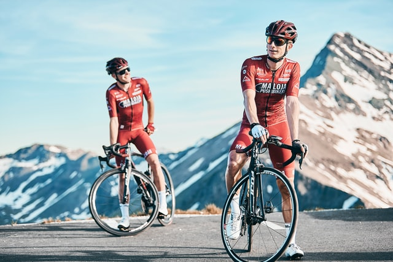

Sporternährung: So kann der Stoffwechsel die Leistung beeinflussen
Damit Sie die Grundregeln der Sporternährung umsetzen können, müssen Sie zuerst die Grundzüge des Stoffwechsels verstehen. Denn unser Stoffwechsel, auch Metabolismus genannt, ist die Grundlage aller biochemischen Vorgänge in unserem Körper. Zum Stoffwechsel gehört nicht nur die Verdauung, sondern auch die Atmung und die Energiegewinnung. Unsere Körperfunktionen und damit auch die Leistung beim Sport hängen also davon ab, wie gut unser Körper Stoffwechselprozesse vollziehen kann. Beim Stoffwechsel werden Bestandteile von Nährstoffen in unseren Körperzellen verwertet und umgewandelt. Deshalb benötigt unser Körper ständig Nährstoffe – da sie unter anderem als Energielieferanten dienen. Hier wird der Zusammenhang von Essen, Sport und Leistung sehr deutlich.
Sport & Essen: Welche Nährstoffe steigern meine Leistungen?
Aber welche Nährstoffe braucht unser Körper, wenn wir Sport treiben? Als Faustregel für die Sporternährung gilt: circa 50% Ihres Energiebedarfs sollten Sie mit Kohlenhydraten decken, 20% sollte aus Fetten und 15% aus Eiweiß bestehen. Dabei sollten Sie vor allem auf die Qualität der Nährstoffe achten. Denn: Kohlenhydrat ist noch lang nicht gleich Kohlenhydrat.
Was Sie vor und nach dem Sport essen sollten
Generell gilt: Zwischen dem letzten großen Essen und dem Sportbeginn sollten mindestens drei Stunden liegen. Sorgen Sie also mit Brot oder Nudeln rechtzeitig für einen gut gefüllten Kohlenhydratspeicher - am besten in Form einer vollwertigen Mahlzeit am Abend vorher oder mit ausreichend zeitlichem Abstand vor dem Training. So können Sie zum Beispiel eine Nudel-Party am Abend vor einem Marathon veranstalten. Trotzdem sollten Sie auf keinen Fall das Training mit knurrendem Magen beginnen! Eine Hand voll Nüsse oder ein paar Stück dunkler Schokolade kurz vor dem Sport zu essen, ist durchaus erlaubt.Nach dem Training ist wiederum die beste Zeit für eine verstärkte Eiweißaufnahme, um die Muskeln zu stärken, am besten möglichst gestückelt mehrere Eiweißhäppchen einzuplanen, am besten in einem Abstand von etwa zwei Stunden. Außerdem kann man, statt nach dem Sport zu essen, auch einfach etwas Magermilch trinken.
Sporternährung & Trinken
Da Sie auch während des Trainings auf die Nährstoffzufuhr achten sollten, jedoch das Essen beim Sport nicht zu empfehlen ist, kommt an dieser Stelle das Trinken ins Spiel. Innerhalb der Sporternährung gleicht das Trinken nicht nur den erhöhten Flüssigkeitsbedarf aus, es liefert außerdem Nährstoffe. Das Problem dabei: Wenn Sie bereits ein Prozent Ihres Körpergewichts in Wasser verloren haben, sinkt Ihre Leistung messbar. Daher sollten Sie auf keinen Fall erst ans Trinken denken, wenn Sie Durst verspüren. Denn Ihr Körper nimmt das Wasser nur verzögert auf. Wenn Sie auf eine ausgewogene Sporternährung achten, sollten Sie regelmäßig über den Tag verteilt trinken, um Ihren Flüssigkeitshaushalt auf Dauer im Gleichgewicht zu halten. Ein weiterer Grund regelmäßig zu hydrieren: nur wenn der Flüssigkeitshaushalt stimmt, gelangen die Nährstoffe während dem Sport im Körper dorthin, wo sie hinsollen! Für Sportler bietet sich besonders natriumreiches Wasser an. Greifen Sie während der Belastung gerne auf isotonische Getränke zurück, die auch Kohlenhydrate liefern. Das zögert die Erschöpfung heraus. Nach der Belastung eignet sich Fruchtsaftschorle im Mischungsverhältnis eins zu eins.
Für jeden Sport die richtige Ernährung
Denken Sie bei der Sporternährung daran: die richtige Ernährung beim Fußball ist nicht gleich die richtrige Ernährung beim Radsport. Unterschiedliche Sportarten stellen auch unterschiedliche Ansprüche an Ihren Körper. Das sollte sich ebenso auf Ihre Ernährung auswirken!
Fussball
Vor dem Training: Kohlenhydratreiche Mahlzeit wie beispielsweise Nudeln Währenddessen: Wasser oder isotonisches Getränk Nach dem Training: Apfelschorle mit einer Prise Salz.
Radsport
Vor dem Training: Kohlenhydratreiche Mahlzeit wie beispielsweise Vollkornbrot Währenddessen: Wasser, Müsliriegel Nach dem Training: Kein Fett!
Joggen
Vor dem Training: Leicht verdauliche Mahlzeit wie beispielsweise Rührei Währenddessen: Wasser Nach dem Training: Bei Marathon: Kohlenhydrate, fürs Abnehmen: Eiweiß
Kraftsport
Vor dem Training: Leicht verdauliche Mahlzeit wie beispielsweise Obst oder Joghurt Währenddessen: Wasser Nach dem Training: Eiweißreiche Mahlzeit wie beispielsweise Milchprodukte
Ernährung beim Fußball

Fußball fordert vom Körper nicht nur durchgehende Aufmerksamkeit, sondern auch hohe Intervallbelastungen. Für die Ernährung beim Fußball bedeutet das: Mit dem letzten größeren Essen vor dem Spiel laden Sie dafür die Kohlenhydratspeicher auf. Trinken Sie 10 Minuten vor dem Anpfiff noch mal einen Viertelliter Wasser, so ist dafür gesorgt, dass die Nährstoffe pünktlich ins Blut gelangen. Während der Halbzeit heißt es: Energie tanken! Das geht am besten mit ein bis zwei Bechern eines isotonischen Getränks und ein paar Stückchen Banane. Nach dem Spiel ist es besonders wichtig, den Wasser- und Elektrolythaushalt wieder in die Balance zu bringen. Der Deutsche Fußballbund (DfB) rät bei der Fußball-Ernährung zu Apfelschorle mit einer Prise Salz, um den Natriumverlust auszugleichen. Zwei bis drei Stunden nach dem Spiel dürfen Sie sich wieder mit einem kohlenhydratreichen Essen belohnen. Ähnliche Ansprüche an den Körper und damit an die Sporternährung stellen übrigens Sportarten wie Handball, Eishockey oder Basketball.
Ernährung beim Radsport
Achten Sie bei der Sporternährung als Radsportler ebenfalls darauf, dass Ihre Kohlenhydratspeicher gut gefüllt sind. Bei längeren Strecken sollten Banane, Müsliriegel und Sportgetränk im Gepäck nicht fehlen. Wichtig: Denken Sie nach einer intensiven Trainingsrunde immer an Ihren Wasserhaushalt. Trinken Sie am besten isotonische Getränke oder auch eine klassische Apfelschorle. Meiden Sie danach schwer verdauliche Nahrung.
Ernährung beim Joggen

Die Mahlzeit vor dem Laufen sollte vor allem leicht zu verdauen und arm an Ballaststoffen sein. Gut geeignet sind Rührei oder auch ein Vollkorntoast mit Honig. Lesen Sie auch die Tipps von Ernährungswissenschaftler Uwe Schröder rund um das richtige Essen vor dem Laufen – Rezeptvorschläge gibt’s obendrauf! Wassermangel beim Laufen kann zum heimlichen Motivationskiller werden. Halten Sie also bereits über den Tag verteilt Ihren Wasserhaushalt im Gleichgewicht. Während des Joggens können Sie sich circa alle 20 Minuten 0,1-0,2l Flüssigkeit genehmigen. Vorsicht: Übereiltes Trinken sorgt nur für einen schweren Magen. Nach dem Laufen kommt es ganz darauf an, welches Ziel Sie sich selbst gesetzt haben. Wer sich auf einen Marathon vorbereitet, sollte darauf achten, den Glykogenspeicher gut gefüllt zu halten. Wer läuft, um abzunehmen, sollte den Fokus eher auf hochwertiges Eiweiß legen. In unserem Magazin finden Sie auch Tipps und Experten-Infos rund um das richtige Essen nach dem Laufen!
Ernährung beim Kraftsport

Wenn Sie im Fitnessstudio am liebsten auf der Hantelbank sitzen, sollten Sie auch Ihre Sporternährung entsprechend anpassen. Wenn Sie direkt vor dem Training der Hunger packt, können Sie guten Gewissens zu Banane, Apfel oder Joghurt (zuckerfrei) mit ein paar Haferflocken greifen. Vor allem beim Muskelaufbau kommt es auf die richtige Eiweißzufuhr an. Daher sollten Sie nach dem Training auf hochwertige Eiweißquellen wie mageres Fleisch, Molkereiprodukte und Hülsenfrüchte zurückgreifen. Der Mythos, dass Ihnen dafür nur ein kurzes Zeitfenster bleibt, stimmt übrigens nicht. So entfaltet ein leckeres Omelett auch noch zwei Stunden nach dem Fitnessstudio seine volle Wirkung. Proteinshakes machen vor allem für Hobbysportler nur begrenzt Sinn. Der Eiweißbedarf, den der Körper nach einer normalen Trainingseinheit entwickelt, lässt sich problemlos durch eine ausgewogene Ernährung decken. Wenn Sie aber auf Nummer Sicher gehen und auf eine natürliche Proteinbombe zurückgreifen wollen, so probieren Sie es doch einfach mal mit einer kleinen Schüssel Hüttenkäse nach dem Training.